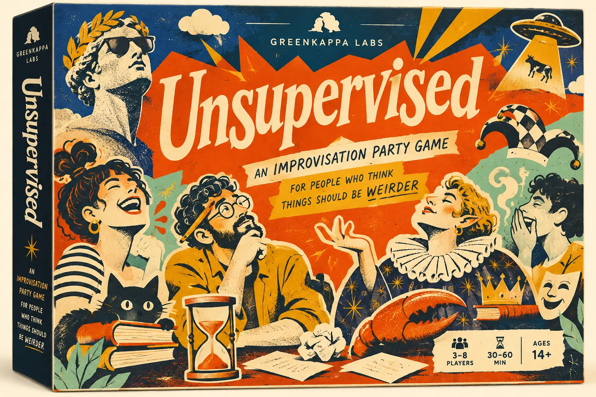

Deal the ingredients
Draw from the deck to create an improbable situation and a set of creative constraints.
Field note 05 / AI improv comedy
Give an AI one job. Then make it everybody's problem.
Feed an AI the worst good ideas your friends can invent. Make the funniest result part of an ever-growing shared fictional history.

01 / The idea
Unsupervised is a party game about collaboration, improvisation, and cascading absurdity. Players combine scenarios and creative prompts, a rotating Operator brings them to a shared AI chat, and the group decides which result deserves to stick around. Winning ideas can become ongoing fictional canon, returning in future rounds as increasingly ridiculous callbacks.
02 / The player experience
Draw from the deck to create an improbable situation and a set of creative constraints.
The rotating Operator uses a shared chat to turn the group's idea into a response.
Players judge the funniest or most inventive result; the people at the table—not the model—decide what lands.
A winning idea can persist as part of the shared story and reappear as the session gets progressively stranger.
The evolving Canon mechanic gives each play session its own history. The best humor comes from what the group remembers, builds upon, and brings back at the worst possible time.
03 / Art direction
Original high-resolution art from our game-design work. The cover concept is retained exactly as created; it has not been redrawn into substitute graphics.
The secondary image is an illustrated promotional sell sheet; card concepts are not approved manufacturing artwork. Artwork and packaging remain concept designs while the games are in development.
04 / Design desk
Creative development is active. These notes describe areas for testing and iteration, not claims that the game is balanced, manufactured, or ready for release.
All five GreenKappa Labs card games are original projects in development. No release date, pricing, or availability has been announced.